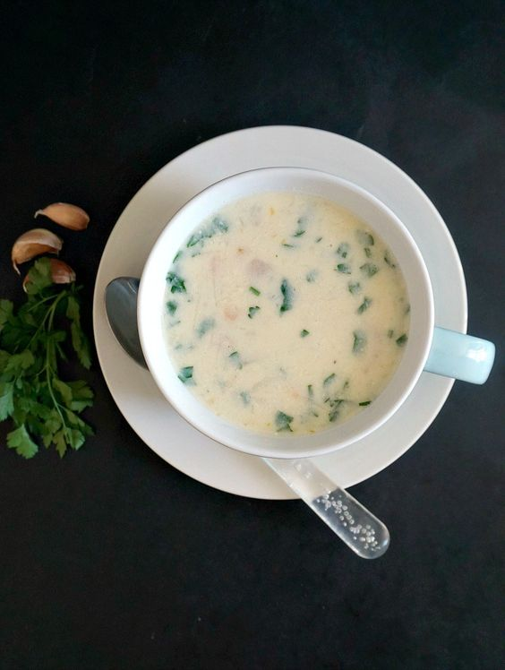

1. Resep Ramen
Bahan:
- Mie ramen
- Kaldu (ayam atau babi)
- Daging (chashu babi)
- Telur rebus
- Sayuran (daun bawang, rumput laut, rebung)
- Miso atau shoyu
- Bawang putih
- Jahe
Cara Membuat:
- Rebus kaldu bersama bawang putih dan jahe.
- Masak mie ramen sesuai petunjuk.
- Tambahkan miso atau shoyu ke dalam kaldu.
- Susun mie dalam mangkuk, tuangkan kaldu panas, tambahkan daging, telur rebus, dan sayuran.
2. Resep Penang Assam Laksa
Bahan:
- Ikan kembung
- Kaldu ikan
- Asam gelugur atau asam jawa
- Cabai, bawang merah, bawang putih, serai
- Daun kesum, bunga kantan
- Mentimun, nanas, daun selada
- Mi laksa
Cara Membuat:
- Rebus ikan, buang tulangnya, dan blender dagingnya.
- Rebus kaldu ikan dengan bumbu dan ikan yang sudah diblender.
- Masak mi laksa, susun dalam mangkuk, tuangkan kuah asam laksa, tambahkan mentimun, nanas, dan daun selada.
3. Resep Ciorba Radauteana

Bahan:
- Ayam
- Wortel, seledri, bawang, bawang putih
- Telur, krim asam, cuka, parsley, garam, lada
Cara Membuat:
- Rebus ayam dengan sayuran sampai matang, angkat dan suwir ayam.
- Campur kuning telur dan krim asam, tambahkan ke dalam sup.
- Tambahkan cuka, garam, dan lada sesuai selera, taburi parsley.
4. Resep Pozole
Bahan:
- Daging babi atau ayam
- Hominy (jagung nixtamal)
- Cabai (ancho, guajillo), bawang putih, bawang merah
- Oregano, radish, selada, jeruk nipis, cilantro
Cara Membuat:
- Rebus daging hingga empuk, tambahkan hominy dan rebus lagi.
- lender cabai dengan bawang putih dan bawang merah, masukkan ke dalam sup.
- Tambahkan oregano, garam, dan lada. Sajikan dengan radish, selada, jeruk nipis, dan cilantro
5. Resep Borscht
Bahan:
- Bit, daging sapi (opsional), kaldu sapi
- Kubis
- kentang
- wortel
- Bawang
- Bawang putih
- Tomat, dill, krim asam, cuka
Cara Membuat:
- Rebus bit, parut dan masukkan kembali ke dalam kaldu.
- Tambahkan daging sapi, kubis, kentang, wortel, dan bawang.
- Tambahkan tomat dan bumbu, masak hingga sayuran empuk.
- Sajikan dengan krim asam dan dill.
6. Resep Bouillabaisse
Bahan:
- Berbagai jenis ikan laut, kerang, udang
- Kaldu ikan
- Tomat, bawang, bawang putih
- Fennel, safron, daun salam, thyme, jeruk
- Roti panggang, rouille (saus)
Cara Membuat:
- Rebus kaldu ikan dengan bumbu dan sayuran.
- Masukkan ikan, kerang, dan udang, masak hingga matang.
- Sajikan dengan roti panggang dan rouille.
7. Resep Minestrone
Bahan:
- Kaldu sayuran atau ayam, pasta atau nasi
- Kacang-kacangan (cannellini), tomat
- Zucchini, wortel, seledri, bawang, bawang putih
Cara Membuat:
- Rebus kaldu dengan sayuran hingga matang.
- Tambahkan pasta atau nasi dan kacang-kacangan.
- ambahkan bayam atau kale, sajikan dengan parmesan dan basil.
r
8. Resep Gumbo
Bahan:
- Okra, roux (tepung dan minyak)
- Kaldu ayam, ayam, udang, sosis andouille
- Paprika, seledri, bawang, bawang putih
- Rempah-rempah (thyme, bay leaf, cayenne pepper)
- Nasi
Cara Membuat:
- Buat roux dengan tepung dan minyak, masak hingga coklat.
- Tambahkan kaldu dan sayuran, masak hingga sayuran empuk.
- Tambahkan ayam, udang, dan sosis, masak hingga matang.
- Sajikan dengan nasi.
9. Resep Sopa de Pollo
Bahan:
- Ayam
- Kaldu ayam
- Bawang, bawang putih, wortel, seledri, tomat
- Nasi atau mi, jeruk nipis, cilantro, alpukat (opsional)
Cara Membuat:
- Rebus ayam dengan sayuran hingga matang.
- Tambahkan nasi atau mi, masak hingga empuk.
- Sajikan dengan jeruk nipis, cilantro, dan alpukat.
10. Resep Shrimp Creole
Bahan:
- Udang
- Tomat
- Bawang, bawang putih, paprika, seledri
- Rempah-rempah (thyme, cayenne pepper, paprika), saus Worcestershire
- Nasi
Cara Membuat:
- Tumis bawang, bawang putih, paprika, dan seledri.
- Tambahkan tomat dan rempah-rempah, masak hingga mendidih.
- Tambahkan udang, masak hingga matang.
- Sajikan dengan nasi